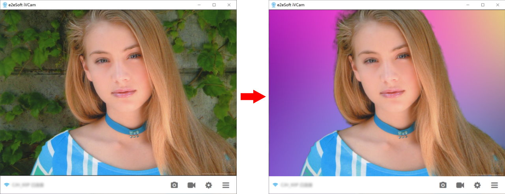

iVCam 到底值不值得掏钱？把免费版和付费版的账算明白
用手机当电脑摄像头这件事，免费版能撑到什么程度、付费版多出来的东西到底值不值、重度玩家为什么最后还是会买单，三类人逐一算账。
开头：一个让我犹豫了三周的问题
我用 iVCam 快两年了。从疫情期间第一次把 iPhone 接进 Zoom 开会，到后来 OBS 推流、录屏剪辑、甚至用手机麦克风当无线话筒——它基本把我家那台破笔记本自带的摄像头彻底送进了历史抽屉。
但我一直没付费。不是付不起，是每次打开设置页看到那个 Pro 按钮，就有个声音在脑子里转：免费版已经够好用了，付费版多出来的那点东西，真的值吗？
这篇就是把这笔账算明白。我去ivcam官网查了定价、翻了论坛里付费用户的实际反馈、也把自己这两年免费版踩过的坑全捋了一遍。你看完三秒就能对号入座——你属于哪类人、该不该掏钱、什么时候该掏。
先搞清楚：免费版给什么、付费版多什么
iVCam 的定价模型挺清晰——免费版能用，但有几条硬限制卡着你；付费版（iVCam Pro）买断，一次付清永久用。没有订阅陷阱，这一点我挺欣赏。
免费版的限制我列一下，每一条都是实际用的时候会撞墙的：
- 水印：画面右下角有 iVCam 的 logo 水印，开会还好，录下来的视频就有点刺眼
- 分辨率上限：免费版最高 1280×720，720P 够用但远没发挥 iPhone 摄像头的潜力
- 帧率限制：30fps 封顶，想要 60fps 的流畅感得付费
- 高级功能锁死：背景虚化/替换、美颜、闪光灯常亮、广角切换——这些按钮免费版点了会弹购买提示
- 连接稳定性：我去ivcam文档翻了一下，里面提过免费版在高带宽需求下会优先降画质保连接，Pro 版优先保画质
Pro 版买断价格在人民币 100 出头——我特意查了，iOS 和 Android 各算各的，你用哪个平台的手机就买哪个，不用同时买。买断制意味着一次付清，后续版本更新免费。
这个定价放在同类虚拟摄像头软件里属于中位偏上——但 iVCam 不是纯软件，它吃的是你手头那台手机的摄像头硬件。iPhone 的传感器素质摆在那，同价位的竞品（比如 EpocCam、DroidCam）要么免费版限制更狠，要么付费版价格更高。
分三类人算账：你属于哪一类？
第一类：轻度用——一个月开两三次会、偶尔录个屏
如果你一个月开 Zoom/Teams 不超过五次，每次半小时以内，录屏只录几段短 demo 给同事看——免费版完全够用，别掏这个钱。
720P 在会议软件里已经是「清晰」档了，对方不会盯着你水印看。30fps 也能满足会议流畅度。背景虚化用 Zoom 自带的就行，免费版开视频会议的核心需求（画面不糊、声音能传、对方能看见你）全部能覆盖。
我自己前一年半就是这个状态。开会用免费版，偶尔录个东西也不在乎水印。直到开始做视频剪辑，才发现分辨率和帧率是真的卡脖子。
时间账：免费版和付费版的功能差，对你来说可能只值每个月省下那 5 分钟手动调设置的时间——折算下来每小时成本超过 200 块，不划算。
第二类：主力用——每周至少三次、每次两小时以上
如果你每周都要开多次视频会，或者做直播、录教程视频、用 OBS 推流——该付了，但别急着立刻付。
这一类人卡脖子的点通常是：
- 分辨率 720P 不够：录出来的视频进剪辑软件放大就糊，想要 1080P 或 4K 必须 Pro
- 帧率 30fps 拖后腿：录游戏画面、做教程演示时，30fps 和 60fps 的观感差一个档次
- 背景虚化：不想用绿幕也不想被 Zoom 自带的虚化算法糊掉头发丝，iVCam 内置的虚化质量明显更好（用的是手机本地 AI，不走云端）
- 水印：录下来的视频带着水印上传平台，显得不太专业
Pro 版买断 100 多块，按使用周期算——假设你还能继续用两年，每天摊下来不到两毛钱。这个账一算就通了。
但我建议你先做两周试用切换：把免费版里卡到你的那几个场景（比如录一段你常用的剪辑素材）用手机录下来，看看到底差在哪、差多大。别光看功能列表，要实际体验 Pro 版的画质提升。iVCam App 里有 7 天 Pro 试用，从官方下载就能拿到，免费用完再决定。

第三类：重度用——直播党、内容创作者、把手机当专业摄像头
如果你是做 YouTube/B站 教程、直播打游戏、或者把 iPhone 当专业机位替代方案——闭眼付，甚至可能不够。
重度用的场景里，Pro 版的每一个解锁项都是刚需：
- 4K 分辨率 + 60fps：iPhone 15 Pro 的 4K60fps 直接输出，画面素质接近千元级 webcam
- HEVC 编码 + 硬件解码：低延迟传输，直播时画面和麦克风同步性更好
- USB 模式 + 无线模式双切换：稳定优先选 USB、移动性优先选 Wi-Fi
- 无线麦克风单独启用：把手机当独立麦克风，配合桌面摄像头用
但 iVCam Pro 也有上限——它毕竟是把手机摄像头的画面转成 USB/网络流，延迟和画质上限取决于手机硬件和网络质量。如果你已经在用 4K 专业相机 + 视频采集卡做直播，iVCam Pro 可能帮不上太多。
时间账：重度用户花 100 多块买断，相当于花一顿工作餐的钱换两年以上的「省了买专用 webcam 的钱」——最便宜的 1080P60fps webcam 也要 300 往上，iVCam Pro + 你手头的 iPhone，直接覆盖到 4K60fps 档位。
替代方案：不付这笔钱，你还有别的路吗？
有的。我把免费替代和降价替代都列出来，你自己对比：
路线 A：彻底免费，换软件
同类竞品的免费版各有侧重：
- EpocCam：免费版带水印但分辨率给到 1080P（iVCam 免费版只有 720P），但帧率封顶 30fps，iOS 端体验不错
- DroidCam：Android 端生态强，免费版分辨率 720P，有水印但 Pro 版比 iVCam 便宜（一次性约 60 块）
- 手机厂商自带：华为、小米、三星都有自家的「手机当电脑摄像头」功能，但跨品牌兼容性差、功能单一
问题是：这些竞品的 Pro 版功能和 iVCam Pro 基本重叠，但 iVCam 的传输稳定性和延迟控制是行业公认的第一梯队。我试过 EpocCam，Wi-Fi 连接在我家路由器下掉帧比 iVCam 明显多；DroidCam 的 iOS 端功能比 Android 端弱不少。
路线 B：降低使用频率，等 Pro 降价
iVCam 偶尔会在 App Store/Google Play 做促销——我见过最低打 7 折，但频率不高，基本是一年一两次。如果你不急，盯着促销能省二三十块。
但有个坑别踩：别买第三方渠道的激活码。iVCam 的授权是绑 App Store/Google Play 账号的，第三方激活码大概率是黑卡退款，用一段时间会被官方拉黑。
路线 C：接受免费版的限制，用补丁补
水印可以用 OBS 的滤镜遮掉（黑条 + 你的 logo），分辨率可以后期转码提升，背景虚化用 Zoom/Teams 自带的顶一顶。这些补丁能解决 80% 的问题，但每一项补丁都要花你额外的配置时间——而且补丁效果终归不如原生。
我去年就是这么干的：OBS 加个裁剪滤镜遮水印，分辨率用 HandBrake 转 1080P，背景虚化就用 Zoom 的。能用，但每次开会前要花两分钟调这些设置——这两分钟的反复，就是后来促使我认真算这笔账的原因。
一个容易忽略的隐藏成本：录像文件修复
翻官方文档时看到一条免费版和 Pro 版没写明的隐性差异：iVCam 的录像直接落盘手机传来的原始数据，不重编码。这意味着传输丢帧会直接写进录像文件里——变帧率、音画不同步、甚至文件打不开。
文档里给了修复方案：视频修复工具处理打不开的文件，转恒定帧率处理卡顿/不同步。但这些工具大多是付费的（比如 Stellar Repair、Remo Repair），免费替代（HandBrake 转码、FFmpeg 命令行）门槛又高。
Pro 版在传输层面更稳定（官方没明说但用户反馈确实少丢帧），录下来的文件出问题的概率更低。对于把录像当素材库的重度用户来说，这个隐性成本可能比 Pro 本身的价格还高——花 100 多块买断 Pro，省得每次录完视频还要花半小时验文件、修文件。
结论：哪类人闭眼付、哪类人再等等、哪类人永远不用付
闭眼付（满足任意一条）：
- 每周至少三次视频会议、每次两小时以上，且会议内容需要录制回放
- 做直播或录教程视频，对画质（1080P 以上）和流畅度（60fps）有明确要求
- 已经在用 iVCam 免费版但被水印、分辨率、帧率中的某一个反复卡脖子
再等等：
- 主力用但不确定 Pro 版提升是否值得：先用 App 内置的 7 天 Pro 试用，录两段你常用的素材做对比，再决定
- 价格敏感但又需要 Pro 功能：盯着 App Store 促销，7 折时入手
永远不用付：
- 轻度用（月均 5 次以内），免费版的 720P + 30fps + 水印完全能接受
- 只开不开录：只用来视频会议不录屏，免费版功能全覆盖
- 已经有专业摄像头或视频采集卡：iVCam 即使 Pro 也比不过专用硬件的低延迟和稳定性
最后说一句实话：我自己是付了的——两年免费版用下来，换工作后每周要开 20+ 小时视频会还要录屏做培训素材，720P 的录屏进剪辑软件就是灾难。100 多块买断，相当于一顿火锅钱换两年以上不用再跟水印、分辨率、帧率较劲。对我来说这笔账算通了。
但如果你的场景只是偶尔开个会，那这钱确实没必要花——免费版就是能撑住的，别被功能列表唬住。
顺便提一句，这套资料在GitHub、Gitee、GitCode三个仓库都留了份，GitHub 是主仓库同步更新，另外两份主要给国内访问不方便的朋友备用。